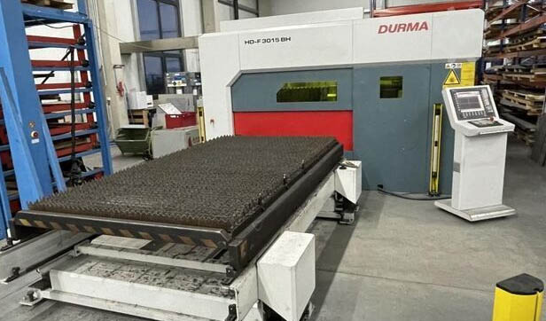

Стоимость лазерной резки металла зависит не только от толщины листа. На цену влияют материал, длина реза, объём партии, срочность и сложность контура. В этой статье покажу, как посчитать стоимость самостоятельно — по той же формуле, что использует наш онлайн-калькулятор.
Если после прочтения останутся вопросы — позвоните: +7 (939) 440-40-01. Подготовим точный расчёт за 2 часа.
Из чего складывается стоимость лазерной резки
На цену влияют четыре вещи. Разберём по порядку.
1. Материал и толщина
У каждого металла свои характеристики — твёрдость, теплопроводность. Проще всего резать сталь: она предсказуемая и стоит дешевле. Нержавейка и алюминий дороже — они хуже проводят тепло, требуют больше мощности лазера и защитного газа. И для любого материала работает одно правило: чем толще лист, тем выше цена за погонный метр реза.
Вот пример цен для основных позиций (без НДС):
| Материал | Толщина | Цена за 1 м |
|---|---|---|
| Сталь / оцинковка | 3 мм | 18 ₽ |
| Нержавейка | 5 мм | 38 ₽ |
| Алюминий | 5 мм | 45 ₽ |
Полный прайс по 17 услугам — в разделе «Прайс-лист» на главной.

2. Длина реза
Считаем в погонных метрах, а не в штуках. Чем длиннее контур, тем выше базовая стоимость. При объёмах от 100 метров начинают работать скидки — расскажу о них ниже.
3. Срочность
Если заказ нужно сделать меньше чем за 3 рабочих дня — применяем коэффициент 1.5. Это не «накрутка»: приходится перестраивать производственный график и ставить сверхурочные. Обычный срок выполнения — 3–5 рабочих дней, и это гораздо дешевле.
4. Сложность контура
Прямая резка дешевле. Если в детали много отверстий, острых углов и кривых — растёт машинное время и время на программирование. Для нестандартных задач коэффициент обсуждаем индивидуально — позвоните, посмотрим чертёж и скажем точно.
Формула расчёта стоимости
Наш калькулятор работает по этой формуле:
Стоимость = Цена_за_метр × Длина_реза × (1 − Скидка) × Коэф_срочности
Что означают переменные:
- Цена_за_метр — из прайса, зависит от материала и толщины;
- Длина_реза — в погонных метрах;
- Скидка — 0, 5%, 10% или 15% в зависимости от объёма;
- Коэф_срочности — 1.0 (обычно) или 1.5 (срочно).
После расчёта без НДС добавляем НДС 22%:
Итоговая_цена = Стоимость × 1.22
Про скидки часто спрашивают: «почему 5%, а не 10%?». Дело в наладке станка. Одна и та же операция: подойти к станку, загрузить программу, выставить режим. Что режем 50 метров, что 500 — наладка одна. Поэтому чем больше партия, тем дешевле метр — мы делим постоянные затраты на больший объём.
Скидки за объём
Для крупных заказов мы снижаем цену:
| Объём, метров | Скидка |
|---|---|
| до 100 | 0% |
| 101 – 500 | 5% |
| 501 – 2000 | 10% |
| от 2001 | 15% |
Минимальная стоимость заказа
Минимальная сумма заказа — 2 000 ₽ (без НДС). Если по расчёту выходит меньше, итоговая цена всё равно 2 000 ₽. Дело в том, что подготовка станка и написание программы занимают минимум час работы, независимо от размера детали.
Максимальный объём онлайн-расчёта
Калькулятор считает заказы до 10 000 погонных метров. Если нужно больше — позвоните менеджеру: +7 (939) 440-40-01. Рассчитаем индивидуально.
Примеры расчёта
Пример 1. Сталь 3 мм, 200 метров
Исходные данные: цена 18 ₽/м, длина 200 м, скидка 5% (объём 101–500 м), без срочности.
- База: 18 × 200 = 3 600 ₽
- Скидка 5%: 3 600 × 0.95 = 3 420 ₽
- Без НДС: 3 420 ₽
- С НДС 22%: 3 420 × 1.22 = 4 172 ₽
Пример 2. Нержавейка 5 мм, 50 метров — как срочность меняет цену
Возьмём цену 38 ₽/м и длину 50 м. Покажу оба сценария — со срочностью и без.
Без срочности:
- База: 38 × 50 = 1 900 ₽
- Скидка: 0% (объём меньше 100 м)
- Применяется минимум: 2 000 ₽
- С НДС 22%: 2 440 ₽
Со срочностью (коэффициент 1.5):
- База: 1 900 ₽
- × 1.5 = 2 850 ₽ (это уже больше минимума — значит, минимум не применяется)
- Без НДС: 2 850 ₽
- С НДС 22%: 3 477 ₽
Пример 3. Алюминий 5 мм, 600 метров (скидка 10%)
Исходные данные: цена 45 ₽/м, длина 600 м, скидка 10% (объём 501–2000 м), без срочности.
- База: 45 × 600 = 27 000 ₽
- Скидка 10%: 27 000 × 0.90 = 24 300 ₽
- Без НДС: 24 300 ₽
- С НДС 22%: 24 300 × 1.22 = 29 646 ₽
Пример 3 — это крупный заказ. Обычно такие приходят от машиностроительных или приборостроительных предприятий. Если ваш заказ меньше — ничего страшного, работает та же формула, только без скидки за объём.
Как сэкономить на лазерной резке
Три практических совета, которые мы сами даём клиентам почти каждый день.
1. Объединяйте заказы
Скидка 15% при объёме от 2 000 метров — это существенно. Если у вас несколько партий — выгоднее запустить их вместе. Одна наладка станка вместо трёх, одна программа вместо трёх — экономия и по времени, и по деньгам.
2. Планируйте сроки
Срочность увеличивает цену в 1,5 раза. Если есть возможность подождать 3–5 рабочих дней — вы сэкономите треть стоимости. Старайтесь планировать заказы заранее — так выгоднее всем.
3. Оптимизируйте чертёж
Меньше отверстий, простая геометрия, минимум врезок — всё это снижает машинное время и цену. Размещайте детали плотнее на листе — меньше отходов. Используйте стандартные толщины металла: они всегда дешевле.
Если не уверены, как лучше разложить детали — пришлите чертёж, посмотрим и подскажем.
Онлайн-калькулятор — расчёт за 1 минуту
Не хотите считать вручную? Воспользуйтесь нашим онлайн-калькулятором. Он работает по той же формуле, что описана выше, и учитывает:
- Материал (сталь, нержавейка, алюминий);
- Толщину от 1 до 20 мм;
- Длину реза;
- Срочность;
- Скидки за объём;
- НДС 22%.
Результат — сразу. Кнопка «Оформить заявку» перенесёт расчёт в форму — вам останется указать контакты и приложить чертёж.
Частые вопросы
Включён ли НДС в цены на сайте?
Цены в прайсе и в расчёте указаны без НДС. В калькуляторе показываются две суммы — без НДС и с НДС 22%. Основание: ФЗ от 28.11.2025 №425-ФЗ.
Что считается срочным заказом?
Заказ со сроком выполнения менее 3 рабочих дней. В этом случае применяется коэффициент 1.5.
Какой минимальный заказ?
2 000 ₽ без НДС для лазерной резки. Для пробивки — 1 500 ₽ (за удар) или 2 000 ₽ (за метр).
Какой максимальный объём можно заказать через калькулятор?
До 10 000 погонных метров. Если нужно больше — позвоните: +7 (939) 440-40-01, рассчитаем индивидуально.
Включён ли материал в стоимость резки?
Цены на сайте указаны за услугу резки. Стоимость материала считается отдельно — в калькуляторе можно посчитать и материал, и работу вместе. Уточните у менеджера: нужен ли вам металл, или вы предоставляете свой.
Работаете ли вы с юридическими лицами?
Да, работаем с юридическими лицами и ИП по договору. Предоставляем полный пакет закрывающих документов. Реквизиты компании — на странице «Реквизиты».
Нужен точный расчёт?
Пришлите чертёж в DXF, DWG или PDF — подготовим коммерческое предложение за 2 часа.